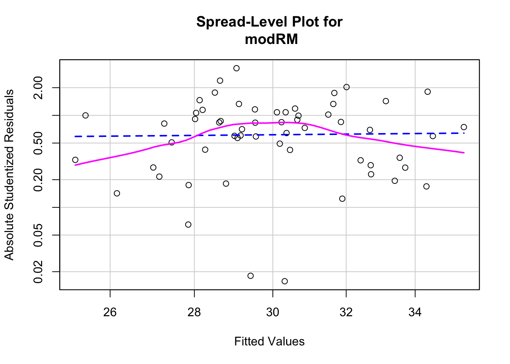
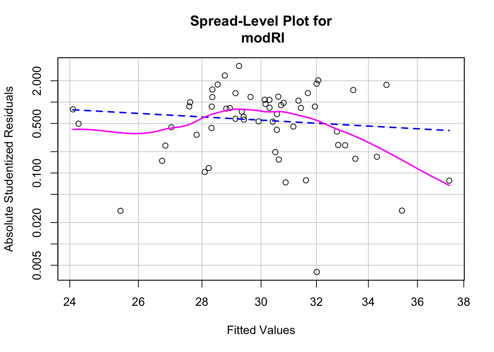
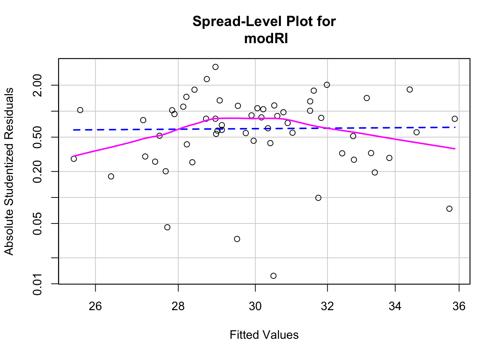
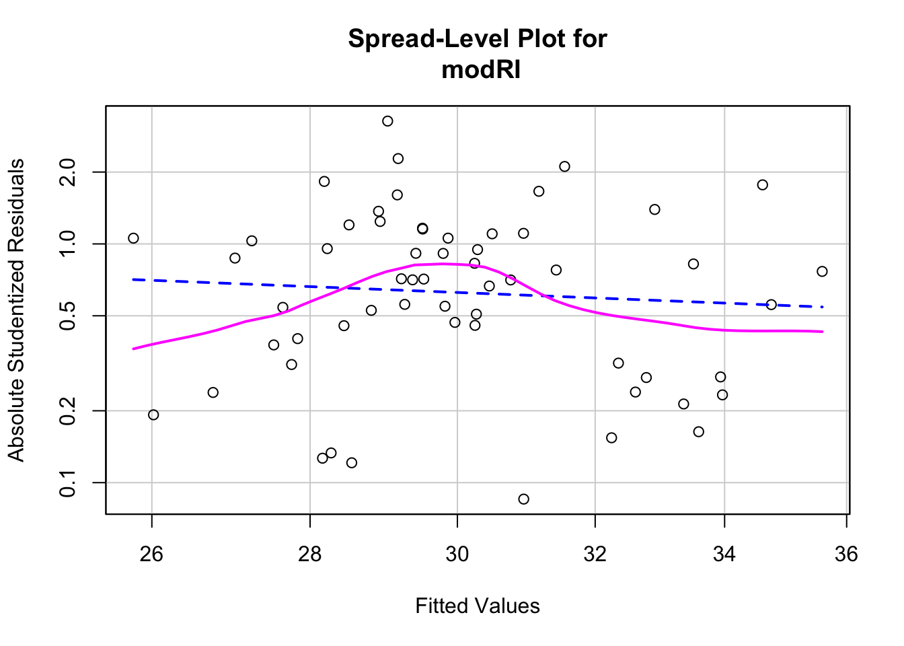
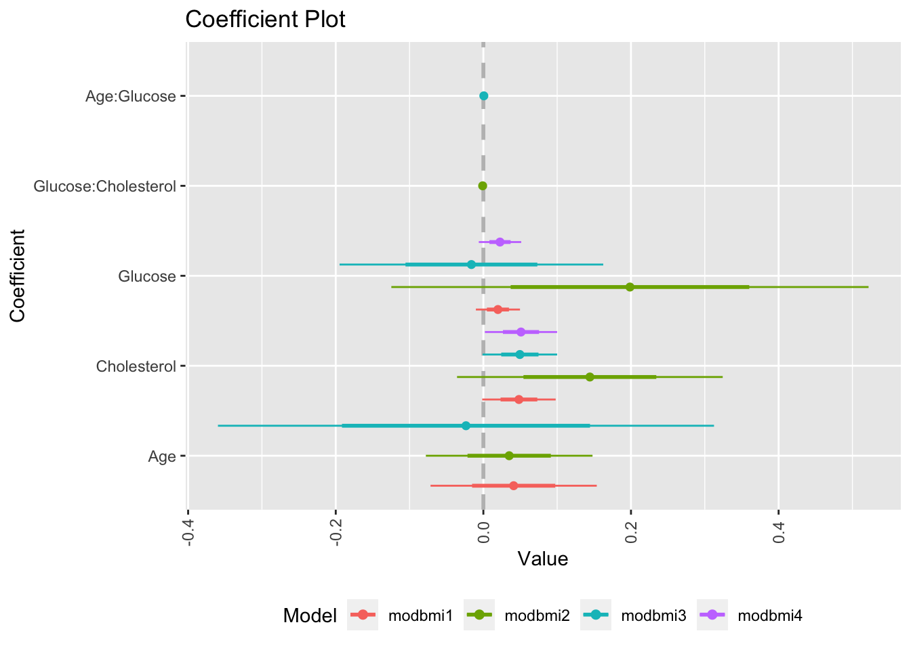
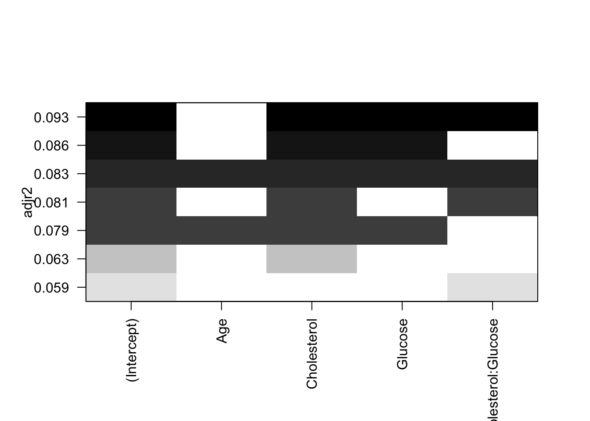
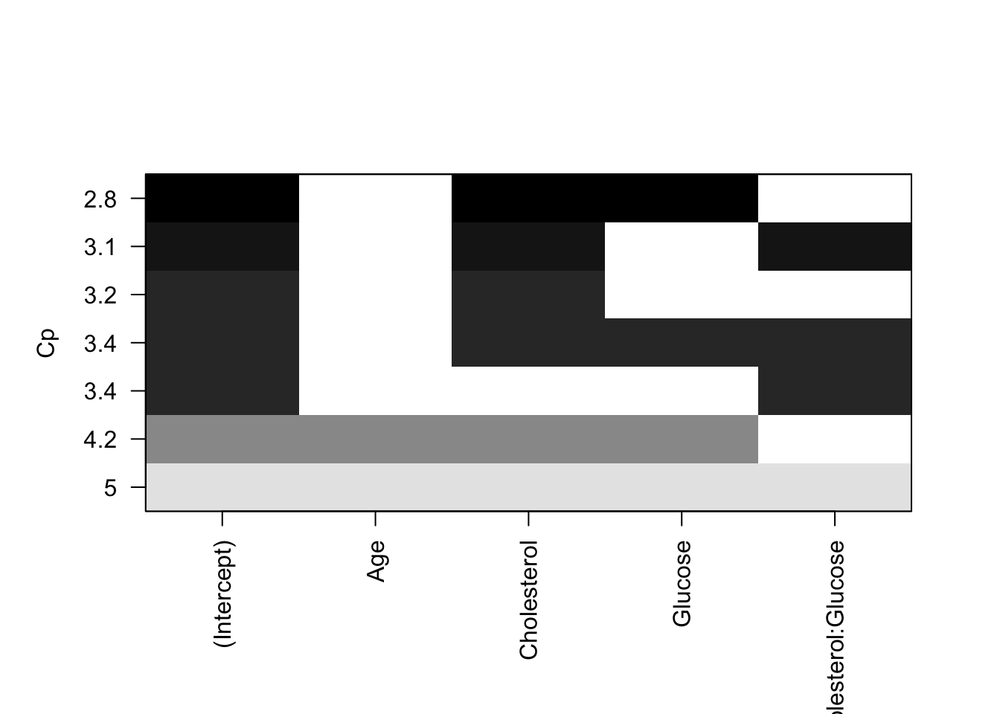

MeCoBi: Modelos de Regresion Lineal Múltiple
D. S. Fernandez del Viso
Septiembre 2019
#Regresión Múltiple Cuando tenemos más de una variable predictora (“independiente”"), la regresión lineal simple viene a ser una regresión múltiple. La regresión polinomial es un caso especial de regresión múltiple, en el cual una misma variable predictora se expresa en forma polinomial (\(X\ y\ X^2,\ por\ ejemplo\)).
En esta sección estaremos considerando el caso de variables predictoras diferentes, y combinaciones de las mismas.
Usaremos el los datos bmi en el archivo mod_empiricos.xlsx. Estos son datos de individuos adultos entre 21 y 79 años, con las siguientes variables: BMI, índice de masa corporal (\(kg/m^{2}\)); Age, edad (años); Cholesterol, niveles de colesterol en sangre, (\(mg/dL\)); Glucose, niveles de glucosa en la sangre, (\(mg/dL\)).
library(readxl)
reg.multiple <- read_excel("data/mod_empiricos.xlsx",
sheet = "bmi")
head(reg.multiple)## # A tibble: 6 x 4
## BMI Age Cholesterol Glucose
## <dbl> <dbl> <dbl> <dbl>
## 1 19.3 21 178 95
## 2 24.5 57 250 98
## 3 24.7 46 176 102
## 4 47.9 47 171 105
## 5 44.2 61 222 101
## 6 29.9 74 156 72##Matriz de relación entre variables Un primer paso en el análisis de regresión múltiple, es examinar la relación entre dos variables a la vez. calcularemos los coeficientes de regresión y construiremos una matriz de gráficos de regresión.
library(car)
#matriz de correlación
cor(reg.multiple)## BMI Age Cholesterol Glucose
## BMI 1.0000000 0.1863333 0.28110580 0.22115998
## Age 0.1863333 1.0000000 0.16966704 0.26705577
## Cholesterol 0.2811058 0.1696670 1.00000000 0.08266412
## Glucose 0.2211600 0.2670558 0.08266412 1.00000000#gráfica de regresiones en parejas, con línea de regresión
scatterplotMatrix(reg.multiple, ~ BMI + Age + Cholesterol + Glucose,
smooth = list(lty = 2), id = TRUE,
regLine = list(lty = 1, col = "red"),
col = "blue")
###Interpretación de la gráfica
podemos observar la distribución de los valores de cada variable: curva de densidad, y ‘alfombra’ de distribución.
muestra los gráficos de puntos por pareja de variable (las unidades de los ejes se encuentran a los extremos de filas y columnas).
la línea de la regresión lineal simple aparece en rojo.
las líneas punteadas muestran una franja de ajuste no-paramétrico de los datos.
los puntos identificados son los que más se alejan del centro de los datos (distancia de Mahalonobis).
##Modelo de regresión múltiple Ahora debemos seleccionar la variable dependiente, y establecer un modelo de regresión múltiple, para evaluarlo estadísticamente. Usaremos como variable dependiente al índice de masa corporal (BMI) y el procedimiento lm() de R.
modRM <- lm(BMI ~ Age + Cholesterol + Glucose,
data = reg.multiple)
summary(modRM)##
## Call:
## lm(formula = BMI ~ Age + Cholesterol + Glucose, data = reg.multiple)
##
## Residuals:
## Min 1Q Median 3Q Max
## -10.6255 -4.5473 -0.8179 3.7439 18.8116
##
## Coefficients:
## Estimate Std. Error t value Pr(>|t|)
## (Intercept) 16.81510 5.07180 3.315 0.00164 **
## Age 0.04103 0.05631 0.729 0.46939
## Cholesterol 0.04819 0.02487 1.938 0.05791 .
## Glucose 0.01974 0.01493 1.322 0.19188
## ---
## Signif. codes: 0 '***' 0.001 '**' 0.01 '*' 0.05 '.' 0.1 ' ' 1
##
## Residual standard error: 6.34 on 54 degrees of freedom
## Multiple R-squared: 0.127, Adjusted R-squared: 0.07855
## F-statistic: 2.62 on 3 and 54 DF, p-value: 0.06008ncvTest(modRM)## Non-constant Variance Score Test
## Variance formula: ~ fitted.values
## Chisquare = 0.02932531, Df = 1, p = 0.86403spreadLevelPlot(modRM)
##
## Suggested power transformation: 0.757141###Análisis de los resultados
los residuales muestran una distribución algo sesgada hacia valores negativos.
los estimados de los coeficientes resultaron positivos.
el valor del intercepto es significativamente diferente de 0 (poco probable que la línea corte el origen).
solamente el estimado del coeficiente para la variable Cholesterol es marginalmente significativo, o sea diferente de 0 (Pr = 0.05791).
el coeficiente de determinación (\(R^{2}\)) nos indica la proporción de la variación en la variable dependiente que es explicada por las variables independientes, y encontranmos que es de 0.127 (12.7 %) solamente.
el estadístico F (que prueba si en conjunto el modelo tiene una respuesta diferente de 0, debida a los coeficientes) resultó no-significativo, si consideramos el usual nivel de P = 0.05.
la prueba de homocedasticidad (varianza igual de los errores de las predicciones) indica que si se cumple este supuesto, y se corrobora en la gráfica con una línea horizontal ajustada a los residuales.
##Modelo con interacciones entre las variables predictoras A partir de los resultados anteriores, vamos a considerar un modelo en el cual incorporemos las posibles interacciones entre variables. Una manera de hacerlo es creando variables en las que dos (o más) variables producen una variable de interacción, es decir que su efecto combinado es mayor que estando separadas.
modRI <- lm(BMI ~ Age + Cholesterol + Glucose + Cholesterol*Glucose,
data = reg.multiple)
summary(modRI)##
## Call:
## lm(formula = BMI ~ Age + Cholesterol + Glucose + Cholesterol *
## Glucose, data = reg.multiple)
##
## Residuals:
## Min 1Q Median 3Q Max
## -10.9645 -4.6505 -0.4692 3.4753 18.6302
##
## Coefficients:
## Estimate Std. Error t value Pr(>|t|)
## (Intercept) -0.9488128 16.7669069 -0.057 0.955
## Age 0.0349834 0.0564484 0.620 0.538
## Cholesterol 0.1443108 0.0899841 1.604 0.115
## Glucose 0.1986009 0.1616392 1.229 0.225
## Cholesterol:Glucose -0.0009461 0.0008514 -1.111 0.271
##
## Residual standard error: 6.326 on 53 degrees of freedom
## Multiple R-squared: 0.1469, Adjusted R-squared: 0.08254
## F-statistic: 2.282 on 4 and 53 DF, p-value: 0.07258ncvTest(modRI)## Non-constant Variance Score Test
## Variance formula: ~ fitted.values
## Chisquare = 0.001354017, Df = 1, p = 0.97065spreadLevelPlot(modRI)
##
## Suggested power transformation: 2.533026###Análisis de los resultados
con este nuevo modelo con interacción, ninguno de los coeficientes resultó significativamente diferente de 0.
el \(R^{2}\) y el ajustado, aumentaron ligeramente, pero esto es usual al aumentar el número de variables, lo cual empieza realmente a sobre-ajustar la variación aleatoria al modelo.
la prueba de igualdad de varianza de los errores de las predicciones, aunque indica que se cumple el supuesto, la gráfica muestra alguna desviación de la horizontal.
la selección de un modelo y sus variables es un proceso sin una regla fija.
Otro modelo con menos variables y con interacción
library(car)
modRI <- lm(BMI ~ Cholesterol + Age*Glucose, data = reg.multiple)
summary(modRI)##
## Call:
## lm(formula = BMI ~ Cholesterol + Age * Glucose, data = reg.multiple)
##
## Residuals:
## Min 1Q Median 3Q Max
## -10.5672 -4.6458 -0.8474 3.7134 18.9200
##
## Coefficients:
## Estimate Std. Error t value Pr(>|t|)
## (Intercept) 20.1718088 9.6804098 2.084 0.0420 *
## Cholesterol 0.0494457 0.0252531 1.958 0.0555 .
## Age -0.0235489 0.1680250 -0.140 0.8891
## Glucose -0.0162039 0.0893022 -0.181 0.8567
## Age:Glucose 0.0006341 0.0015529 0.408 0.6847
## ---
## Signif. codes: 0 '***' 0.001 '**' 0.01 '*' 0.05 '.' 0.1 ' ' 1
##
## Residual standard error: 6.389 on 53 degrees of freedom
## Multiple R-squared: 0.1298, Adjusted R-squared: 0.06411
## F-statistic: 1.976 on 4 and 53 DF, p-value: 0.1115ncvTest(modRI)## Non-constant Variance Score Test
## Variance formula: ~ fitted.values
## Chisquare = 0.06073413, Df = 1, p = 0.80534spreadLevelPlot(modRI)
##
## Suggested power transformation: 0.7963235Modelo con las dos variables más correlacionadas inicialmente
modRI <- lm(BMI ~ Cholesterol + Glucose, data = reg.multiple)
summary(modRI)##
## Call:
## lm(formula = BMI ~ Cholesterol + Glucose, data = reg.multiple)
##
## Residuals:
## Min 1Q Median 3Q Max
## -10.125 -4.748 -1.134 3.321 18.832
##
## Coefficients:
## Estimate Std. Error t value Pr(>|t|)
## (Intercept) 17.95236 4.80502 3.736 0.000446 ***
## Cholesterol 0.05098 0.02447 2.083 0.041902 *
## Glucose 0.02254 0.01437 1.569 0.122449
## ---
## Signif. codes: 0 '***' 0.001 '**' 0.01 '*' 0.05 '.' 0.1 ' ' 1
##
## Residual standard error: 6.313 on 55 degrees of freedom
## Multiple R-squared: 0.1185, Adjusted R-squared: 0.08641
## F-statistic: 3.696 on 2 and 55 DF, p-value: 0.0312ncvTest(modRI)## Non-constant Variance Score Test
## Variance formula: ~ fitted.values
## Chisquare = 0.2490362, Df = 1, p = 0.61775spreadLevelPlot(modRI)
##
## Suggested power transformation: 1.818741##Comparando modelos
Una manera de comparar visualmente modelos (en realidad sus coeficientes) es usar el paquete coefplot, en conjunto con ggplot2, para crear una gráfica de los coeficientes estimados de cada variable (sola o de interacción), en cada modelo y detectar los que son diferentes de 0, y los modelos que los contienen.
library(ggplot2)
library(coefplot)
#cálculo para todos los modelos
modbmi1 <- lm(BMI ~ Age + Cholesterol + Glucose, data=reg.multiple)
modbmi2 <- lm(BMI ~ Age + Glucose + Cholesterol + Glucose*Cholesterol, data=reg.multiple)
modbmi3 <- lm(BMI ~ Cholesterol + Age*Glucose, data=reg.multiple)
modbmi4 <- lm(BMI ~ Cholesterol + Glucose, data=reg.multiple)
#comparando coeficientes de todos los modelos
multiplot(modbmi1, modbmi2, modbmi3, modbmi4, pointSize = 2, intercept=FALSE)## Warning: It is deprecated to specify `guide = FALSE` to remove a guide. Please
## use `guide = "none"` instead.
## Warning: It is deprecated to specify `guide = FALSE` to remove a guide. Please
## use `guide = "none"` instead.
##Selección de modelos por pasos
Existen métodos para seleccionar automáticamente el mejor modelo, a base de estadísticos indicadores, y que conlleva un procedimiento iterativo. Uno de estos procedimientos es conocido como ‘stepwise’ (por pasos), y aunque no es el más aceptado en la actualidad, ha sido muy usado y es una buena manera de ilustrar el procedimiento, usando nuestros datos.
#formulación de un modelo nulo y un modelo completo
modNulo <- lm(BMI ~ 1, data = reg.multiple)
modFull <- lm(BMI ~ Age + Cholesterol + Glucose + Age*Cholesterol + Age*Glucose + Cholesterol*Glucose,
data = reg.multiple)
#procedimiento stepwise
bmistep <- step(modNulo,
scope = list(lower=modNulo, upper=modFull,
direction="both"))## Start: AIC=219.97
## BMI ~ 1
##
## Df Sum of Sq RSS AIC
## + Cholesterol 1 196.462 2289.8 217.19
## + Glucose 1 121.605 2364.6 219.06
## + Age 1 86.322 2399.9 219.92
## <none> 2486.2 219.97
##
## Step: AIC=217.19
## BMI ~ Cholesterol
##
## Df Sum of Sq RSS AIC
## + Glucose 1 98.063 2191.7 216.66
## <none> 2289.8 217.19
## + Age 1 49.203 2240.6 217.93
## - Cholesterol 1 196.462 2486.2 219.97
##
## Step: AIC=216.66
## BMI ~ Cholesterol + Glucose
##
## Df Sum of Sq RSS AIC
## <none> 2191.7 216.66
## + Cholesterol:Glucose 1 55.387 2136.3 217.17
## - Glucose 1 98.063 2289.8 217.19
## + Age 1 21.337 2170.3 218.09
## - Cholesterol 1 172.920 2364.6 219.06bmistep##
## Call:
## lm(formula = BMI ~ Cholesterol + Glucose, data = reg.multiple)
##
## Coefficients:
## (Intercept) Cholesterol Glucose
## 17.95236 0.05098 0.02254###Interpretación y selección del modelo
el proceso de selección se basa en mantener el modelo con el menor valor del estadístico AIC (Akaike Information Criterion), que indica el modelo con la menor pérdida de información y mayor simplicidad.
en el proceso se parte de un modelo nulo (no efecto de predictores) y hasta un modelo muy complejo, incluyendo interacciones.
las variables se incluyen y quitan y cada vez se recalcula AIC, hasta obtener el modelo que mantiene el mínimo valor de AIC.
modST <- lm(formula = BMI ~ Cholesterol + Glucose, data = reg.multiple)
summary(modST)##
## Call:
## lm(formula = BMI ~ Cholesterol + Glucose, data = reg.multiple)
##
## Residuals:
## Min 1Q Median 3Q Max
## -10.125 -4.748 -1.134 3.321 18.832
##
## Coefficients:
## Estimate Std. Error t value Pr(>|t|)
## (Intercept) 17.95236 4.80502 3.736 0.000446 ***
## Cholesterol 0.05098 0.02447 2.083 0.041902 *
## Glucose 0.02254 0.01437 1.569 0.122449
## ---
## Signif. codes: 0 '***' 0.001 '**' 0.01 '*' 0.05 '.' 0.1 ' ' 1
##
## Residual standard error: 6.313 on 55 degrees of freedom
## Multiple R-squared: 0.1185, Adjusted R-squared: 0.08641
## F-statistic: 3.696 on 2 and 55 DF, p-value: 0.0312##Selección usando R-cuadrado ajustado y Mallow’s Cp para mejores modelos
Otro método visual de selección, basado en el \(R^{2}-ajustado\) y en Cp (Mallow’s Cp):
library(leaps)
modCp <- regsubsets(BMI ~ Age + Cholesterol + Glucose + Cholesterol*Glucose, data = reg.multiple, nbest = 2)
plot(modCp, scale="adjr2")
plot(modCp, scale="Cp")
###Interpretación
El mejor modelo con R-cuadrado ajustado está en la parte superior, y contiene Cholesterol, Glucose y su interacción.
Para el caso del estadístico Cp, al igual que con el AIC, el valor más bajo representa el mejor modelo, en este caso uno de Intercept, Cholesterol y Glucose. En general el valor de Cp se acerca al modelo con un número similar de parámetros (incluyendo el intercepto), en nuestro caso tres.
##Referencias bibliográficas
Kabacoff, R. I. 2015. R in Action. Data analysis and graphics with R. Manning Publications Co., Shelter Island, NY, USA.
Lander, J. P. 2014. R for everyone. Pearson Education, Inc. Crawfordsville, Indiana, USA.
Suárez, E., Pérez, C.M., Rivera, R., Martínez, M.N. 2017. Applications of Regression Models in Epidemiology. John Wiley & Sons, Inc., Hoboken, New Jersey, USA.